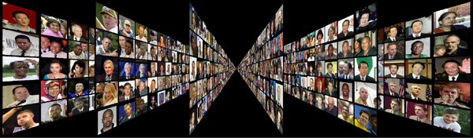
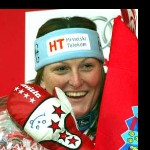

Labeled Faces in the Wild Home

On October 29th at ICCV 2019 in Seoul, the creators of LFW were
honored
with the Mark Everingham Award for service to the Computer Vision
Community. Thanks to all that have participated in making LFW a
success!
New results page:
We have recently updated and changed the format and content of our results page. Please refer to the new technical report for details of the changes.
We have recently updated and changed the format and content of our results page. Please refer to the new technical report for details of the changes.
- Face verification and other forms of face recognition are very different problems. For example, it is very difficult to extrapolate from performance on verification to performance on 1:N recognition.
- Many groups are not well represented in LFW. For example, there are very few children, no babies, very few people over the age of 80, and a relatively small proportion of women. In addition, many ethnicities have very minor representation or none at all.
- While theoretically LFW could be used to assess performance for certain subgroups, the database was not designed to have enough data for strong statistical conclusions about subgroups. Simply put, LFW is not large enough to provide evidence that a particular piece of software has been thoroughly tested.
- Additional conditions, such as poor lighting, extreme pose, strong occlusions, low resolution, and other important factors do not constitute a major part of LFW. These are important areas of evaluation, especially for algorithms designed to recognize images “in the wild”.
For all of these reasons, we would like to emphasize that LFW was published to help the research community make advances in face verification, not to provide a thorough vetting of commercial algorithms before deployment.
While there are many resources available for assessing face recognition algorithms, such as the Face Recognition Vendor Tests run by the USA National Institute of Standards and Technology (NIST), the understanding of how to best test face recognition algorithms for commercial use is a rapidly evolving area. Some of us are actively involved in developing these new standards, and will continue to make them publicly available when they are ready.
Welcome to Labeled Faces in the Wild, a database of face photographs
designed for studying the problem of unconstrained face recognition.
The data set contains more than 13,000 images of faces collected from
the web. Each face has been labeled with the name of the person
pictured. 1680 of the people pictured have two or more distinct photos
in the data set. The only constraint on these faces is that they were
detected by the Viola-Jones face detector. More details can be found
in the technical report below.
There are now four different sets of LFW images including the original and three different types of "aligned" images. The aligned images include "funneled images" (ICCV 2007), LFW-a, which uses an unpublished method of alignment, and "deep funneled" images (NIPS 2012). Among these, LFW-a and the deep funneled images produce superior results for most face verification algorithms over the original images and over the funneled images (ICCV 2007).
Related:
[new] Collected resources related to LFW - updated 2017/05/09.
LFW Deep Funneled Images.
LFW attributes file (see Attribute and Simile Classifiers for Face Verification, Kumar et al.).
Face Detection Data set and Benchmark (FDDB), our new database for face detection research.
Faces in Real-Life Images workshop at the European Conference on Computer Vision 2008, run by Erik Learned-Miller, Andras Ferencz, and Frederic Jurie.
last updated: 2018/01/09 20:15 ESTThere are now four different sets of LFW images including the original and three different types of "aligned" images. The aligned images include "funneled images" (ICCV 2007), LFW-a, which uses an unpublished method of alignment, and "deep funneled" images (NIPS 2012). Among these, LFW-a and the deep funneled images produce superior results for most face verification algorithms over the original images and over the funneled images (ICCV 2007).
Related:
[new] Collected resources related to LFW - updated 2017/05/09.
LFW Deep Funneled Images.
LFW attributes file (see Attribute and Simile Classifiers for Face Verification, Kumar et al.).
Face Detection Data set and Benchmark (FDDB), our new database for face detection research.
Faces in Real-Life Images workshop at the European Conference on Computer Vision 2008, run by Erik Learned-Miller, Andras Ferencz, and Frederic Jurie.
change log
Explore the database:
- Alphabetically by first name:
[A) [Alf) [Ang) [B) [Bin) [C) [Che) [Col) [D) [Daw) [Don) [E) [Eri) [F) [G) [Goe) [H) [I) [J) [Jav) [Jes) [Joh) [Jos) [K) [Kim) [L) [Lil) [M) [Mark) [Mel) [Mik) [N) [O) [P) [Per) [Q) [R) [Ric) [Rog) [S) [Sha) [Ste) [T) [Tim) [U) [V) [W) [X) [Y) [Z) - Alphabetically by first name, only people with more than one image:
[A] [B] [C] [D] [E] [F] [G] [H] [I] [J] [K] [L] [M] [N] [O] [P] [Q] [R] [S] [T] [U] [V] [W] [X] [Y] [Z] - Alphabetically by last name:
[A] [B] [C] [D] [E] [F] [G] [H] [I] [J] [K] [L] [M] [N] [O] [P] [Q] [R] [S] [T] [U] [V] [W] [X] [Y] [Z] - By number of images per person:
[1 A-E] [1 F-J] [1 K-O] [1 P-T] [1 U-Z] [2] [3] [4] [5] [6-10] [11+] - Single page of all names (no thumbnails)
Download the database:
- All images as gzipped tar file
(173MB, md5sum a17d05bd522c52d84eca14327a23d494)
- [new] All images aligned with deep funneling
(111MB, md5sum 68331da3eb755a505a502b5aacb3c201)
- All images aligned with funneling
(233MB, md5sum 1b42dfed7d15c9b2dd63d5e5840c86ad)
- All images aligned with commercial face alignment software
(LFW-a - Taigman, Wolf, Hassner)
See also LFW3D (frontalized LFW images) under LFW resources below. - Superpixel segmentations:
- lfw superpixels (328MB, md5sum eb6543ba9bbef54f8ba481c895d3526f)
- lfw deep funneled superpixels (129MB, md5sum 5a166aa967e260aa70d55b5785aa7a61)
- lfw funneled superpixels (328MB, md5sum f1ede21969d2ad8262a16a26d6212177)
- To download LFW attribute values (Attribute and Simile Classifiers for Face Verification, Kumar et al.), see the relevant section on the results page.
- Subset of images - people with name starting with A (14MB)
as zip file - Subset of images - George_W_Bush (individual person with most images) (6.9MB)
as zip file - All names (with number of images for given name) as text file
- README - information on file formats and directory structure
- Training, Validation, and Testing:
-
- View 1:
- For development purposes, we recommend using the below
training/testing split, which was generated randomly and independently
of the splits for 10-fold cross validation, to avoid unfairly
overfitting to the sets above during development. For instance, these
sets may be viewed as a model selection set and a validation set. See
the tech report below for more details.
Explore the sets: [training][test]
Download the sets: pairsDevTrain.txt, pairsDevTest.txt, peopleDevTrain.txt, peopleDevTest.txt - View 2:
- As a benchmark for comparison, we suggest reporting performance as
10-fold cross validation using splits we have randomly generated.
Explore the sets: [1][2][3][4][5][6][7][8][9][10]
Download the sets: pairs.txt, people.txt
For details on how the sets were created, please refer to the tech report below.
- Results:
- Accuracy and ROC curves for various methods available on results page.
- 13233 images
- 5749 people
- 1680 people with two or more images
- Errata:
-
The following is a list of known errors in LFW. Due to the small
number of such errors, the database will be left as is (without
corrections) to avoid confusion.
It is important that users of the database provide their algorithms with the database as is, i.e. without correcting the errors below, since previous results published for the database did not have the advantage of correcting for these errors.
Currently, there are six incorrectly labeled matched pairs in View 2. While we do not believe this should have a significant effect on accuracy, we do encourage researchers to be aware of these errors when producing any visualizations (e.g. matched pairs most confidently predicted as mismatched, as the matched pair may actually be mismatched).
The current known errors in View 2 are:
Fold 1: 
Janica Kostelic, 1
Janica Kostelic, 2Fold 1:
Nora Bendijo, 1
Nora Bendijo, 2Fold 1:
Martha Bowen, 1
Martha Bowen, 2Fold 5:
Jim OBrien, 1
Jim OBrien, 2Fold 5:
Jim OBrien, 1
Jim OBrien, 3Fold 5:
Elisabeth Schumacher, 1
Elisabeth Schumacher, 2Fold 7:
Debra Messing, 1
Debra Messing, 2
More detail about all the errors is given below.
Note: unless stated otherwise below, any error in a matched pair will mean that the label ("matched") is wrong. Any error in a mismatched pair, even with the person having the wrong identity, will generally be correct (the label of "mismatched" will still be correct).
- Recep_Tayyip_Erdogan_0004
is incorrect (it is an image of Abdullah Gul):
This image appears only in one matched pair in the training set of View 1:
Recep Tayyip Erdogan, 2
Recep Tayyip Erdogan, 4 - Anja_Paerson_0001
is incorrect (it is an image of Janica Kostelic):

This image does not appear in a matched or mismatched pair, in either view. - Janica_Kostelic_0001
is incorrect (it is an image of Anja Paerson):
This image appears in one matched pair in the test set of View 1, and the same matched pair and one mismatched pair (with Don_Carcieri_0001) in fold 1 of View 2:
Janica Kostelic, 1
Janica Kostelic, 2 - Bart_Hendricks_0001
is incorrect (it is a duplicate image of Ricky_Ray_0001):

This image appears in two mismatched pairs in the training set of View 1, and one mismatched pair in fold 2 of View 2. (None of the mismatched pairs are with Ricky_Ray.) - Carlos_Beltran_0001
is incorrect (it is a duplicate image of Raul_Ibanez_0001):
This image appears in one mismatched pair in the test set of View 1, and one mismatched pair in fold 5 of View 2. (None of the mismatched pairs are with Raul_Ibanez.) - Emmy_Rossum_0001
is incorrect (it is a duplicate image of Eva_Amurri_0001):
This image appears in one mismatched pair in the test set of View 1 (the mismatched pair is not with Eva_Amurri). - Michael_Schumacher_0008
is incorrect (it is an image of Rubens Barrichello):
This image does not appear in a matched or mismatched pair, in either view. - Mahmoud_Abbas_0012
is incorrect (it is an image of Hamad Bin Isa al-Khalifa):
This image does not appear in a matched or mismatched pair, in either view. - Jim_OBrien
contains two distinct persons. Specifically, Jim_OBrien_0001 is a
different person from Jim_OBrien_0002, Jim_OBrien_0003.
This leads to an error in two matched pairs (0001 with 0002; 0001 with 0003), present in both the training set of View 1 and fold 5 of View 2:
Jim OBrien, 1
Jim OBrien, 2
Jim OBrien, 1
Jim OBrien, 3 - John_Gruden_0001
is an incorrect spelling of Jon_Gruden.

This image appears in a mismatched pair in fold 3 of View 2 (not with Jon_Gruden). - Elisabeth_Schumacher contains
two distinct persons, where the correct spelling of Elisabeth_Schumacher_0001 is actually Elizabeth Schumacher.
This leads to a incorrect matched pair in both the test set of View 1 and fold 5 of View 2.
Elisabeth Schumacher, 1
Elisabeth Schumacher, 2 - Andrew_Gilligan_0001
is actually an image of Andrew_Caldecott.

This image appears in a mismatched pair in the training set of View 1 and in fold 1 of View 2 (neither with Andrew_Caldecott). - Nora_Bendijo_0002
is actually an image of Flor Montulo, and
Flor_Montulo_0002
is actually an image of Nora_Bendijo
Nora_Bendijo_0002 appears in an incorrect matched pair in fold 1 of View 2.
Nora Bendijo, 1
correct label
Nora Bendijo, 2
is actually Flor Montulo
Flor Montulo, 1
correct label
Flor Montulo, 2
is actually Nora Bendijo
Flor_Montulo_0002 appears in an incorrect matched pair in the test set of View 1, and in a mismatched pair in fold 1 of View 2, but not with Nora_Bendijo. - Wang_Yingfan and
Yingfan_Wang
are the same person. The two names are never together in a
mismatched pair.
- Wang_Nan and
Nan_Wang
are the same person. The two names are never together in a
mismatched pair.
- Talisa_Bratt and Talisa_Soto are the same person.
These images never appear in a mismatched pair together.
- Shinya_Taniguchi_0001
is actually an image of Takahiro_Mori.

This image never appears in a mismatched pair with an image of Takahiro_Mori. - Sung_Hong_Choi_0001
is an image of Choi_Sung-hong.

This image never appears in a mismatched pair with an image of Choi_Sung-hong. - Martha_Bowen_0002
is actually an image of Gabrielle_Rose.
This image never appears in a mismatched pair with an image of Gabrielle_Rose. However, the incorrect matched pair Martha_Bowen_0001, Martha_Bowen 0002 does appear in the training set of View 1 and fold 1 of View 2. - The following is a correct labeling: Tamara_Mowry_0001,
Tia_Mowry_0001 (twins).
However, these images never appear together in a mismatched pair. - Carlos_Ruckauf_0001
is an image of Eduardo_Duhalde.

This image never appears in a mismatched pair with an image of Eduardo_Duhalde. - Claire_Hentzen_0001, 0002
are images of Morgan_Hentzen.
These images never appear in a mismatched pair with an image of Morgan_Hentzen. - Debra_Messing_0002
is incorrect (it is actually an image of Ruve Robertson, who does not appear in the database).
This image appears in a matched pair in fold 7 of View 2.
- Recep_Tayyip_Erdogan_0004
is incorrect (it is an image of Abdullah Gul):
- Reference:
- Please cite as:
Gary B. Huang, Manu Ramesh, Tamara Berg, and Erik Learned-Miller.
Labeled Faces in the Wild: A Database for Studying Face Recognition in Unconstrained Environments.
University of Massachusetts, Amherst, Technical Report 07-49, October, 2007.
[pdf]
BibTeX entry:@TechReport{LFWTech, author = {Gary B. Huang and Manu Ramesh and Tamara Berg and Erik Learned-Miller}, title = {Labeled Faces in the Wild: A Database for Studying Face Recognition in Unconstrained Environments}, institution = {University of Massachusetts, Amherst}, year = 2007, number = {07-49}, month = {October}}Gary B. Huang and Erik Learned-Miller.
Labeled Faces in the Wild: Updates and New Reporting Procedures.
University of Massachusetts, Amherst, Technical Report UM-CS-2014-003, May, 2014.
[pdf]
@TechReport{LFWTechUpdate, author = {Gary B. Huang Erik Learned-Miller}, title = {Labeled Faces in the Wild: Updates and New Reporting Procedures}, institution = {University of Massachusetts, Amherst}, year = 2014, number = {UM-CS-2014-003}, month = {May}}LFW survey paper
Erik Learned-Miller, Gary B. Huang, Aruni RoyChowdhury, Haoxiang Li, and Gang Hua.
Labeled Faces in the Wild: A Survey.
In Advances in Face Detection and Facial Image Analysis, edited by Michal Kawulok, M. Emre Celebi, and Bogdan Smolka, Springer, pages 189-248, 2016.
[Springer Page] [Draft pdf]
LFW funneled images
If you use the LFW images aligned by funneling, please cite:
Gary B. Huang, Vidit Jain, and Erik Learned-Miller.
Unsupervised joint alignment of complex images.
International Conference on Computer Vision (ICCV), 2007.
@InProceedings{Huang2007a, author = {Gary B. Huang and Vidit Jain and Erik Learned-Miller}, title = {Unsupervised Joint Alignment of Complex Images}, booktitle = {ICCV}, year = {2007} }LFW deep funneled images
If you use the LFW imaged aligned by deep funneling, please cite:
Gary B. Huang, Marwan Mattar, Honglak Lee, and Erik Learned-Miller.
Learning to Align from Scratch.
Advances in Neural Information Processing Systems (NIPS), 2012.@InProceedings{Huang2012a, author = {Gary B. Huang and Marwan Mattar and Honglak Lee and Erik Learned-Miller}, title = {Learning to Align from Scratch}, booktitle = {NIPS}, year = {2012} }
- Resources:
- Collected resources related to LFW:
Note: We have not verified the accuracy or reliability of the code and data at the following links; we merely provide them as a convenience. Please use your own judgment about the accuracy of the resources below.
- Fine-grained LFW (FGLFW)
"Common face verification addresses mainly large intra-class variations, such as pose, illumination, and expression. After inspecting the LFW databases, one can identify a main limiting factor for its unconstrained face verification task: almost all the negative face pairs are quite easy to distinguish. Thus, verification is, by its nature a problem in which many examples are very easy with large inter-class variance, because the collection of LFW database is based on the assumption of random imposter attack. For practical usage, however, it is likely that a desperate impostor may attempt to spoof a genuine user by seeking a similarly-looking people. To simulate this deliberate imposture attack, we construct FGLFW database, which deliberately selects 3000 similarly-looking face pairs within original image folders by human crowdsourcing to replace the random negative pairs in LFW."
- LFW gender labeling
Manually verified LFW gender labels, from:
Mahmoud Afifi, Abdelrahman Abdelhamed. AFIF4: Deep Gender Classification based on AdaBoost-based Fusion of Isolated Facial Features and Foggy Faces, 2017.
"In order to label the images based on gender, we used the attribute values presented by Kumar et al. [1]. Then, we used the genderize.io API to estimate the gender based on the first name of each face image in the LFW. Eventually, we manually reviewed each category of male and female images three times to completely eliminate any incorrect labels.
[1] N. Kumar, A. Berg, P. N. Belhumeur, S. Nayar, Describable visual attributes for face verification and image search, IEEE Transactions on Pattern Analysis and Machine Intelligence 33 (10) (2011) 1962–1977."
- LFWgender
"Getting the known gender based on name of each image in the Labeled Faces in the Wild dataset. This is a python script that calls the genderize.io API with the first name of the person in the image."
- CASIA
WebFace Database
"While there are many open source implementations of CNN, none of large scale face dataset is publicly available. The current situation in the field of face recognition is that data is more important than algorithm. To solve this problem, we propose a semi-automatical way to collect face images from Internet and build a large scale dataset containing 10,575 subjects and 494,414 images, called CASIA-WebFace. To the best of our knowledge, the size of this dataset rank second in the literature, only smaller than the private dataset of Facebook (SCF). We encourage those data-consuming methods training on this dataset and reporting performance on LFW. "
- LFW3D
- collection of frontalized LFW images and Matlab code for frontalization
"Frontalization is the process of synthesizing frontal facing views of faces appearing in single unconstrained photos. Recent reports have suggested that this process may substantially boost the performance of face recognition systems... we explore the simpler approach of using a single, unmodified, 3D surface as an approximation to the shape of all input faces. We show that this leads to a straightforward, efficient and easy to implement method for frontalization. More importantly, it produces aesthetic new frontal views and is surprisingly effective when used for face recognition and gender estimation."
- Fine-grained LFW (FGLFW)
- Contact:
- Questions and comments can be sent to:
Gary Huang - gbhuang@cs.umass.edu
- Support:
- The building of the LFW database was supported by NSF CAREER Award number 0546666.
- Change History:
-
- 2018/01/09
- Updated Errata, in particular listing one incorrect matched pair that appears in Fold 7 of View 2.
- 2017/03/01
- Updated Errata, in particular listing one incorrect matched pair that appears in Fold 1 of View 2.
- 2015/09/22
- Added Ding et al.*, Ding and Tao*, and Xu et al.* to results page.
- 2015/07/31
- Updated Errata. Added Baidu, AuthenMetric commercial system results to results page.
- 2015/06/03
- Updated Errata.
- 2015/05/19
- Updated Errata.
- 2015/04/13
- Added Sun et al.*, Li and Hua*, updated betaface.com commercial system*, on results page.
- 2015/01/19
- Updated Face++ commercial system result*, added betaface.com commercial system result* on results page.
- 2014/12/09
- Added Ouamane et al.* and Sun et al.* to results page.
- 2014/12/08
- Added new LFW-related resources
section.
Added Hassner et al.* and TCIT* to results page. - 2014/12/03
- Added Hu et al.* to results page.
- 2014/12/01
- Added Arashloo and Kittler* to results page.
- 2014/09/19
- Added Li et al.* to results page.
- 2014/06/20
- Added Sun et al.* to results page.
- 2014/06/16
- Added Lu and Tang* to results page.
- 2014/06/12
- Added Sun et al.* to results page.
- 2014/05/28
- Added AUC for two unsupervised methods - LHS and MRF-MLBP - to results page.
- 2014/05/23
- Added Zhu et al.* to results page.
- 2014/05/22
- Updated Kumar et al.* with results from journal paper, and added Berg and Belhumeur*, on results page.
- 2014/05/21
- Added Sun et al.* and Hu et al.* to results page.
- 2014/05/19
- Added Taigman et al.* to results page.
- 2014/05/09
- Re-organized results page to more accurately and fairly compare algorithms under a variety of protocols. See the new technical report for details of the changes.
- 2014/03/17
- Added Face++ commercial system result* to results page.
- 2014/02/10
- Added Aurora Computer Services commercial system result* to results page.
- 2014/01/09
- Added VisionLabs commercial system result* to results page.
- 2013/12/08
- Added John_Gruden_0001 labeling error to Errata.
- 2013/10/18
- Added Cao et al.*, Cao et al.*, and Barkan et al.* to results page.
- 2013/10/08
- Added Lei et al.* to results page.
- 2013/08/23
- Added new deep funneled images and corresponding deep funneled superpixels for download. (CJG)
- 2013/08/12
- Temporarily disabled deep funneled data set download. (CJG)
- 2013/08/09
- Removed superpixel images from database gallery. Added deep funnel aligned images to database gallery. (CJG)
- 2013/08/08
- Added deep funneled aligned image set to main page. (CJG)
- 2013/07/28
- Added Simonyan et al.* to results page.
- 2013/07/13
- Added Yi et al.* to results page.
- 2013/07/13
- Added Arashloo and Kittler* to results page.
- 2013/06/12
- Added Sharma et al.* to results page.
- 2013/05/12
- Added Zhen et al.* to results page.
- 2013/05/02
- Added Chen et al.* and Chen et al.* to results page.
- 2013/04/17
- Added Anja_Paerson_0001 labeling error to Errata.
- 2013/03/21
- Added Li et al.* to results page.
- 2012/08/17
- Added Hussain et al.* to results page.
- 2012/07/18
- Added Berg and Belhumeur* to results page.
- 2012/03/03
- Added Huang et al.* to results page.
- 2011/12/14
- Added Ying and Li* to results page.
- 2011/09/07
- Added link to download computed attribute values for all LFW images produced by Kumar et al., on the results page.
- 2011/08/28
- Added Seo and Milanfar* to results page.
- 2011/08/08
- Added images of incorrectly labeled faces, in Errata.
- 2011/08/08
- Added Taigman and Wolf* to results page.
- 2011/08/01
- Added Jim_OBrien_0001 labeling error to Errata.
- 2011/07/18
- Updated the results page, adding notes on the use of external training data, arranging the image-restricted method results to roughly reflect the amount of external training data used, and added specific notes on the type of external training data used for each algorithm.
- 2011/07/12
- Added Mahmoud_Abbas_0012 labeling error to Errata.
- 2011/06/28
- Added Yin et al.* to results page.
- 2011/04/28
- Added superpixel segmentation files to downloads section.
- 2011/04/04
- Added Li et al.* to results page.
- 2011/01/29
- Added Pinto and Cox* to results page.
- 2010/11/17
- Added link to related database: Face Detection Data set and Benchmark (FDDB).
- 2010/10/26
- Added Nguyen and Bai* to results page.
- 2010/09/07
- Added Michael_Schumacher_0008 labeling error to Errata.
- 2010/04/17
- Added Cao et al.* to results page.
- 2010/02/08
- Added Ruiz-del-Solar et al.* and unsupervised (no training data) results to results page.
- 2009/10/26
- Added Kumar et al.* to results page.
- 2009/09/24
- Added link to LFW-a, LFW images aligned with commercial face alignment software, from Taigman, Wolf, and Hassner, under downloads.
- 2009/09/02
- Added Wolf et al.* to results page.
- 2009/08/03
- Added Taigman et al.* to results page.
- 2009/07/02
- Added Guillaumin et al.* to results page.
- 2009/06/24
- Added Carlos_Beltran_0001 and Emmy_Rossum_0001 labeling errors to Errata.
- 2009/04/02
- Added Pinto et al.* to results page.
- 2009/02/04
- Added Bart_Hendricks_0001 labeling error to Errata.
- 2008/07/01
- Updated LFW technical report with proper reference for VidTIMIT:
C. Sanderson.
Biometric Person Recognition: Face, Speech and Fusion.
VDM-Verlag, 2008.
ISBN 978-3-639-02769-3 - 2008/06/12
- Added Errata section and listed two known labeling errors.
- 2008/02/04
- Added funneled images and super-pixels images
to person pages.
Made all funneled images available as single downloadable file. - 2008/01/25
- Added results page with numbers for method of Nowak and Jurie, CVPR 2007.
- 2007/11/21
- Added revised version of technical report.
- 2007/11/19
- Added technical report to page.
- 2007/11/15
- Added mailing list and change history to page.